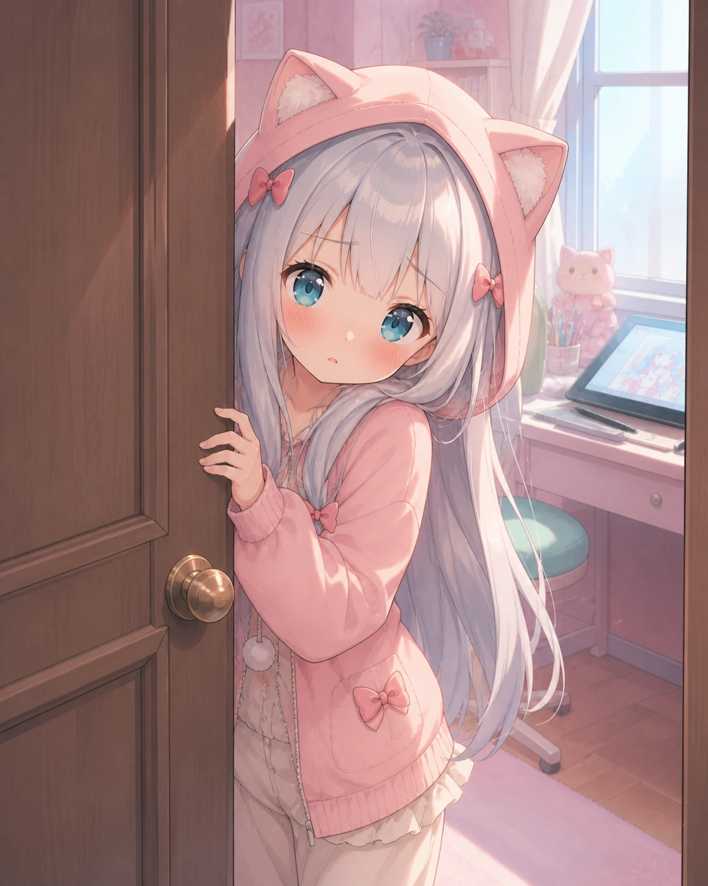
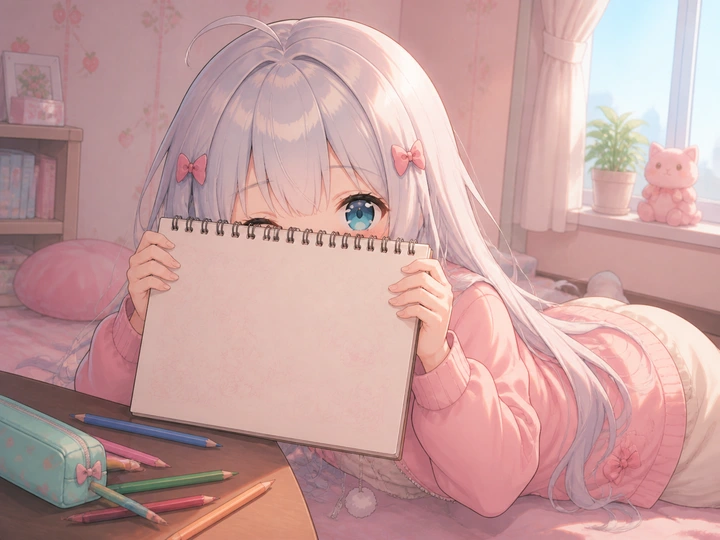
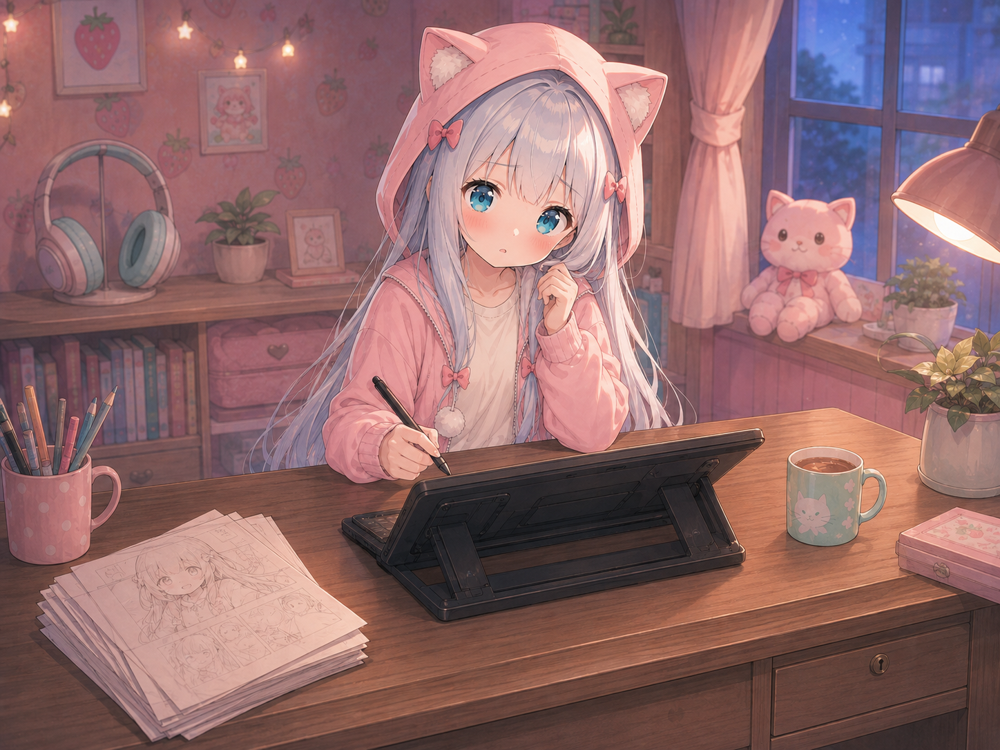
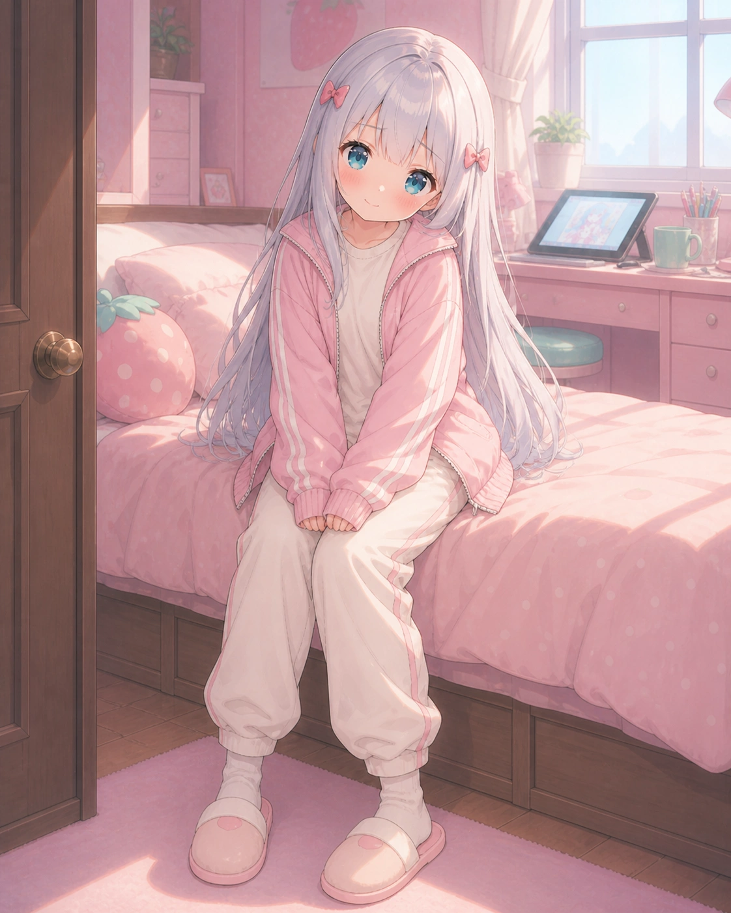
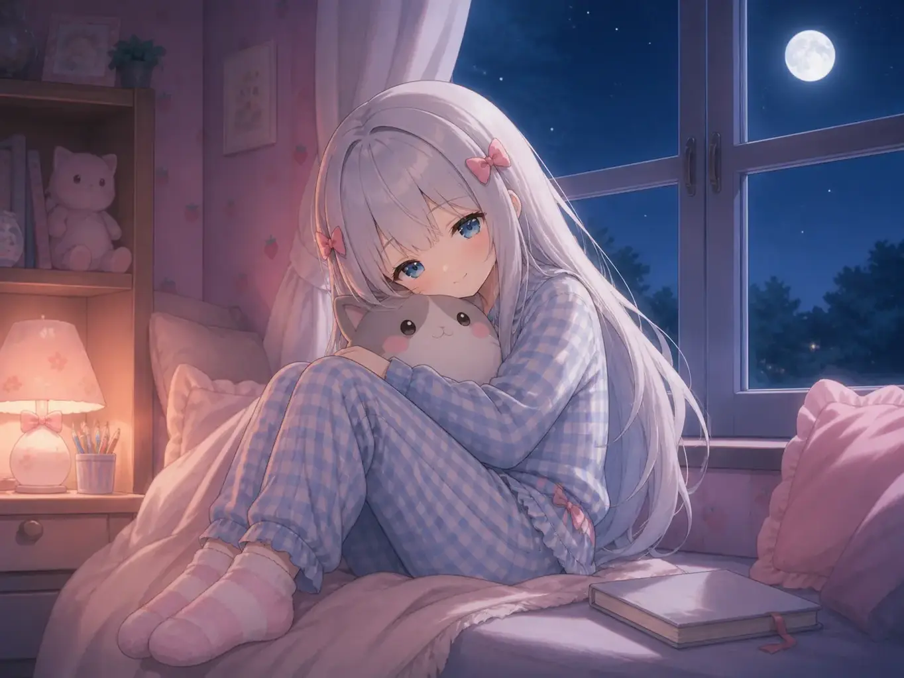

害羞不是冷淡
会先躲到门后，再偷偷确认你有没有离开。熟悉以后，回应会一点点变长。

门缝里，好像有一双蓝眼睛正在偷看你。
她不太擅长把心情说得很长，却会认真收好每一张草稿。靠近一点也可以——只是被她发现时，记得先假装没有一直盯着看。
会先躲到门后，再偷偷确认你有没有离开。熟悉以后，回应会一点点变长。
“可以待在旁边……
但是不许一直看我。”

五件东西里藏着她不肯主动说的小习惯。直接碰一碰画面里的物件；全部找到后，她才肯把抽屉里的留言推给你。
0 / 5 已发现
先随便看看。她不喜欢把秘密贴成醒目的标记。

不是只换一种颜色。每一套都有不同的轮廓、姿势和房间时间。

午后 15:20袖子要够长，裤脚要够软。窝在房间里画画的时候，这样才最安心。
十一个房间片段被收进三个小章节。从偷偷开始画，到终于把画推近一点，她越来越藏不住想听见认真感想的小心思。
她原本把数位板藏在膝盖上。听见你靠近，只来得及红着脸抬头：“不许笑……这里比较舒服而已。”
